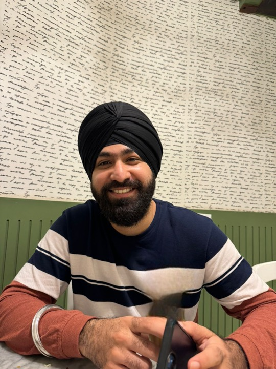

The founder
Sajan Singh Shergill

He holds an MS in Data Science from Pace University, in New York, and he is building the tutor he wanted while he was in the degree.
The computer science degree came first, in Mumbai, at Guru Nanak Khalsa College, from 2018 to 2021. After that he spent three years inside Eduvanz, a company that lent money for education. He joined as a QA engineer in September 2021, became lead QA, and left in June 2024 as a software developer in test. The product was lending and payments. The habit was smaller and stricter: when something failed, write the cause down before the next release. A failure without a written cause comes back wearing a new ticket number.
In the summer of 2025 he did a short testing contract at Tianzhi Studios. While he was in the MS he worked as a graduate assistant in Pace’s Office of Communications and External Relations. That degree is finished: Seidenberg School, GPA 3.6, 2024 to 2026.
What the degree felt like
The courses never shared a memory. Linear algebra, probability, statistics, and differential calculus sat in one place. Algorithms sat in another. Machine learning arrived and assumed the probability course was still warm. An interview asked for Bayes as a rare disease and an accurate test, the same idea the homework had asked for as a formula.
On his own machine the maths is still filed that way: linear algebra, probability, statistics, calculus, and a separate folder for data structures and algorithms. His GitHub has been public since March 2020. It now holds 184 repositories, most of them the kind of system a data job posts about — advertising measurement, churn, pipelines, warehouses, fraud, experiments. The field asks for a new stack every month. Each semester of the MS asked him to hold the previous course while the next one started. The syllabus never did that holding.
His own work before Yaad was measurement. The portfolio he publishes calls him a product data scientist for ads and growth: incrementality, lift, whether a campaign actually moved the number. A result is a decision that changed. That is the same test he now uses on Yaad. A feature has to change the next question, or the sentence someone could say about the miss. Otherwise it is decoration.
Why the tutor is called memory
Yaad (याद) is the Hindi word for memory. The seal on the page is य, the first letter. He built it because every tutor he opened had the defect he used to file: close the tab, and the mistake is gone. The student pays for the explanation twice.
The first version was deliberately small. A Class 10 maths student should not have to re-explain a trigonometry miss. One subject, four records, the next sitting opening on the last gap. Once that was true, he put the degree he had completed into the product. Semester packs from those courses. A box where any syllabus can be pasted. A map across the courses. Each open gap asked again in the words a hiring loop uses. A daily brief, so the industry keeps moving in view while a chapter is open.
The QA years are still in the product. A concept gap is a written cause, not a score. Three repeats means the hint already failed and the approach has to change. A correct answer on that exact idea clears it. Mastery starts at the middle of the scale, so a new chapter is unknown, and it decays when it goes quiet, so a chapter you abandoned does not keep a flattering number.
Where he is, in public
He writes from the United States. The longer portrait of the measurement work lives on his own site. The code lives on GitHub. The rest of him, the parts he has chosen to put online, is linked below.